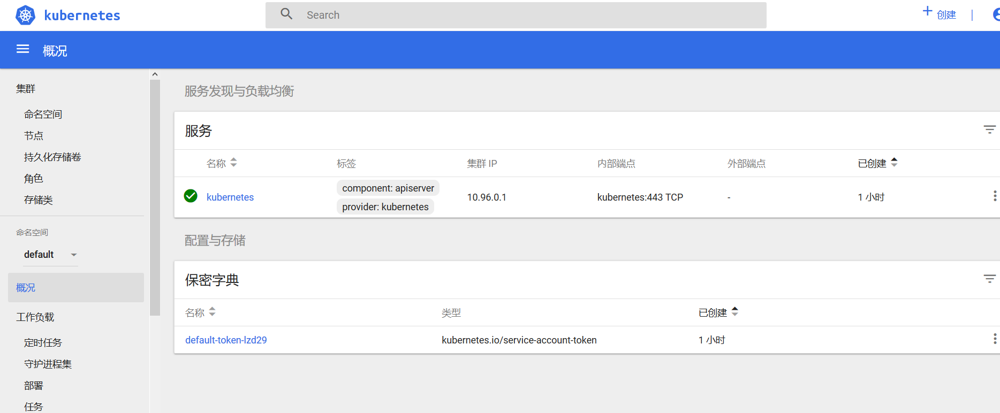

Kubernetes Dashboard
安装
wget http://pencil-file.oss-cn-hangzhou.aliyuncs.com/blog/kubernetes-dashboard.yaml
添加
# ------------------- Dashboard Service ------------------- #
kind: Service
apiVersion: v1
metadata:
labels:
k8s-app: kubernetes-dashboard
name: kubernetes-dashboard
namespace: kube-system
spec:
type: NodePort #新增
ports:
- port: 443
targetPort: 8443
selector:
修改
---
# ------------------- Dashboard Deployment ------------------- #
。。。。。
image: siriuszg/kubernetes-dashboard-amd64
部署
kubectl create -f kubernetes-dashboard.yaml
查看deployment和Service
[docker@k8s-master ~]$ kubectl get --namespace=kube-system deployment kubernetes-dashboard
NAME READY UP-TO-DATE AVAILABLE AGE
kubernetes-dashboard 1/1 1 1 2m53s
[docker@k8s-master ~]$ kubectl get --namespace=kube-system service kubernetes-dashboard
NAME TYPE CLUSTER-IP EXTERNAL-IP PORT(S) AGE
kubernetes-dashboard NodePort 10.104.164.187 <none> 443:30129/TCP 4m16s
访问https://
配置登录权限(待测)
dashboard-admin.yaml
kind: ClusterRoleBinding
apiVersion: rbac.authorization.k8s.io/v1beta1
metadata:
name: admin
annotations:
rbac.authorization.kubernetes.io/autoupdate: "true"
roleRef:
kind: ClusterRole
name: cluster-admin
apiGroup: rbac.authorization.k8s.io
subjects:
- kind: ServiceAccount
name: admin
namespace: kube-system
---
apiVersion: v1
kind: ServiceAccount
metadata:
name: admin
namespace: kube-system
labels:
kubernetes.io/cluster-service: "true"
addonmanager.kubernetes.io/mode: Reconcile
---------------------
作者：终南山道人
来源：CSDN
原文：https://blog.csdn.net/qq_24513043/article/details/82460759
版权声明：本文为博主原创文章，转载请附上博文链接！
apiVersion: rbac.authorization.k8s.io/v1beta1
kind: ClusterRoleBinding
metadata:
name: kubernetes-dashboard
labels:
k8s-app: kubernetes-dashboard
roleRef:
apiGroup: rbac.authorization.k8s.io
kind: ClusterRole
name: cluster-admin
subjects:
- kind: ServiceAccount
name: kubernetes-dashboard
namespace: kube-system
kubectl apply -f dashboard-admin.yaml
查看token
kubectl -n kube-system describe secret $(kubectl -n kube-system get secret | grep admin-user | awk '{print $1}')
